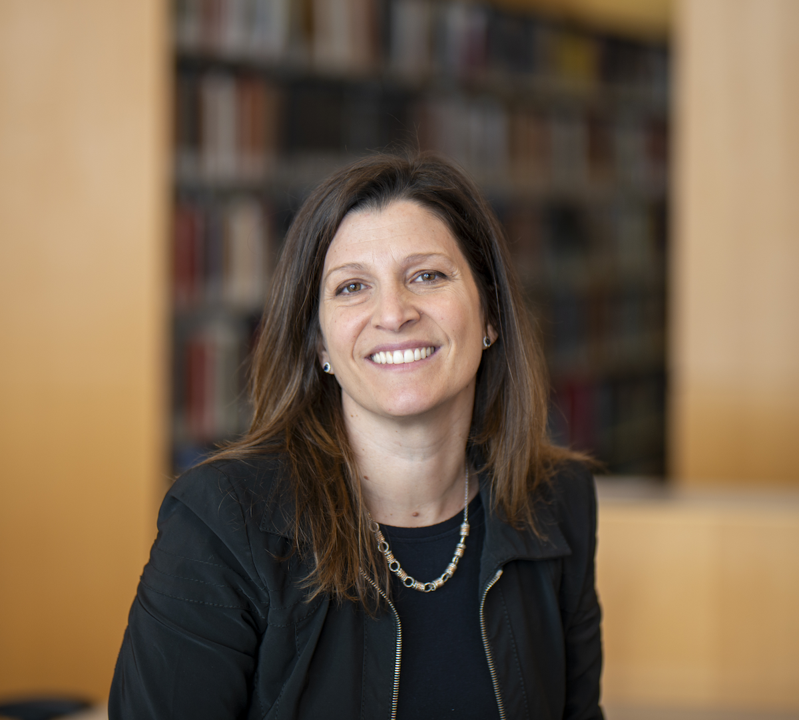

About the PI
Viviana Acquaviva
I am a Professor in the Physics Department at the CUNY NYC College of Technology and at the CUNY Graduate Center, a Visiting Professor at the SISSA Institute for Data Science and at the Flatiron Institute, and the Institutional Integration Director at the LEAP STC center.
After many happy years as an Astrophysicist, I trained as a Simons PIVOT fellow in 2023–2024 and I am now lucky to work at the intersection of AI, Physics, and Earth Science with an awesome crew!
I am pursuing three broad research directions:
- How to evaluate and improve the forecasting skill of global climate models using ad-hoc metrics, predictive modeling, and generative tools.
- How to reconstruct full spatio-temporal geophysical fields, in particular ocean carbon, from sparse and biased data, using statistics, machine learning, and AI.
- How generative AI tools can be used responsibly to improve research workflow, and how principles of ethical AI can be translated into an actionable framework for scientists.
Lab news
Updates from people and projects
Loading news…